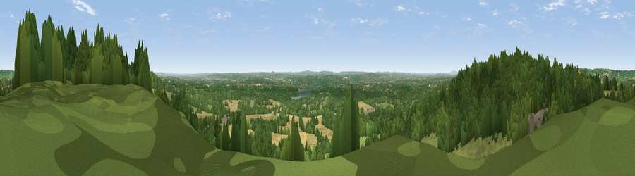

Viewpoint near Ide Hill
#18009 in England · top 4% of its area beats it · near Ide HillWhere it is
The exact computed spot (TQ 49025 51575). Click the marker for map links.
The view, rendered

A 360° render of this exact spot computed from the terrain model, tree cover and land cover — summer colours, afternoon light, calibrated against photographs of famous viewpoints. Real trees, hedges and buildings will differ in detail.
The panorama
Grey silhouette: terrain skyline in each direction (720 bearings, Earth curvature and refraction included). Dashed green: skyline with trees (+15 m) and buildings (+8 m) as obstacles. Blue strip: how far the ground is visible on each bearing.
Where the view opens
Wedge length = distance to the farthest visible ground on that bearing (vegetation-aware). Rings at 10, 25 and 50 km.
What fills the view
43% woodland · 37% grassland · 17% cropland · 2% built-up
Angular shares of the visible panorama (visual magnitude), not map area. Landscape diversity 0.49 (0–1 Shannon).
Key numbers
More beautiful places nearby
The staircase of upgrades: each row has a higher view potential than everything closer. Driving times are estimates from straight-line distance, calibrated against real road routing — check an actual route before setting out.
| Place | Direction | Drive | Score |
|---|---|---|---|
| Viewpoint near Ide Hill | E · 1 km | ~4 min | 62.7 |
| Viewpoint near French Street | W · 2 km | ~6 min | 64.5 |
| Viewpoint near Shipbourne | E · 8 km | ~16 min | 66.2 |
| Viewpoint near Lower Kingswood | W · 25 km | ~41 min | 67.7 |
| Viewpoint near Coldharbour | WSW · 35 km | ~54 min | 70.0 |
| Viewpoint near Plumpton | SSW · 41 km | ~60 min | 80.4 |
| Viewpoint near Westmeston | SSW · 41 km | ~61 min | 80.9 |
| Ditchling Beacon | SSW · 42 km | ~61 min | 81.8 |
51.24389, 0.13366 · source: screening · position refined by local search. Computed location — check access rights before visiting.